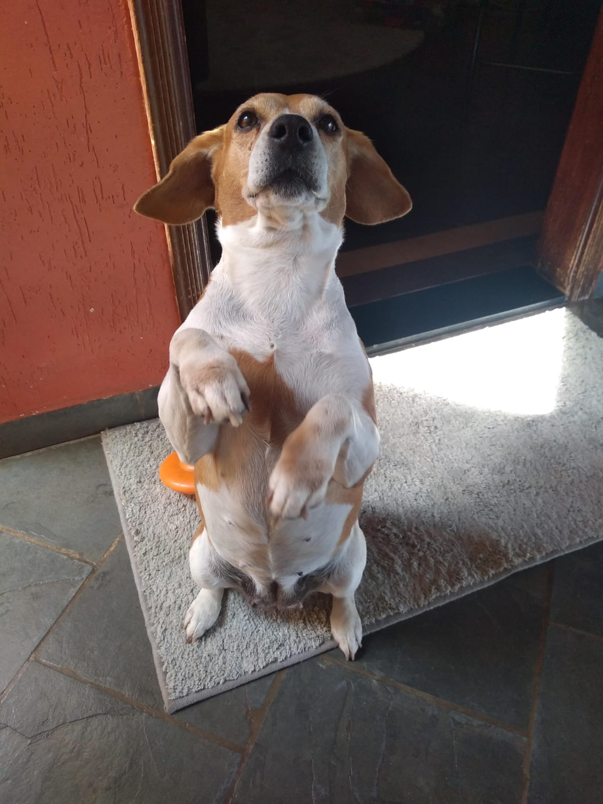
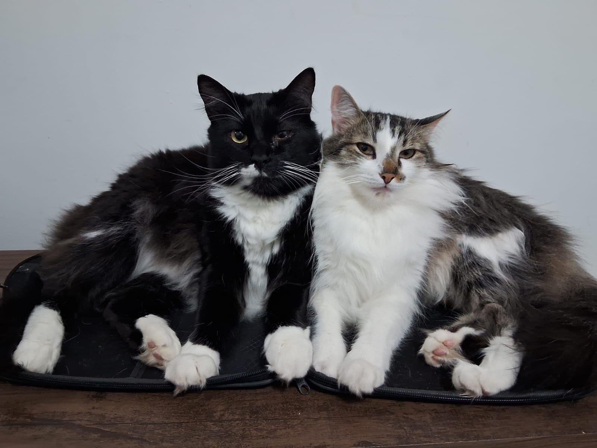

Resgatamos animais em situação de vulnerabilidade, oferecemos cuidados veterinários, carinho e preparamos cada um deles para encontrar uma família amorosa como a sua.


A Patinhas Unidas nasceu do sonho de mudar a realidade de cães e gatos abandonados. Trabalhamos como um porto seguro para animais feridos, resgatados de maus-tratos ou perdidos nas ruas da nossa comunidade.
Acreditamos que cada vida pet importa e que a adoção responsável tem o poder de transformar não apenas a vida do animal, mas de toda a família que o recebe. Nosso trabalho é voluntário e depende exclusivamente de pessoas de grande coração.
Resgatar, reabilitar e conectar animais desamparados a lares cheios de afeto e segurança, conscientizando a sociedade sobre os preceitos da guarda responsável.
Ser um modelo de referência na proteção animal, erradicando o abandono em nossa região através de projetos educativos, castração em massa e adoções seguras.
Amor genuíno, respeito à vida de todas as espécies, transparência financeira, ética de atuação comunitária, responsabilidade social e acolhimento humano.
Existem diversas formas de apoiar o nosso trabalho voluntário. Escolha a que melhor se encaixa na sua rotina e faça a diferença hoje mesmo.
Abra as portas da sua casa e do seu coração para um cãozinho ou gatinho que sonha com um lar definitivo.
Adotar PetDoe de 1h a 1h30 da sua semana para nos apoiar com a limpeza dos abrigos e muito carinho aos animais.
Ser VoluntárioContribua com mantimentos para o nosso abrigo ou ajude com qualquer valor diretamente através do PIX.
Fazer Doação